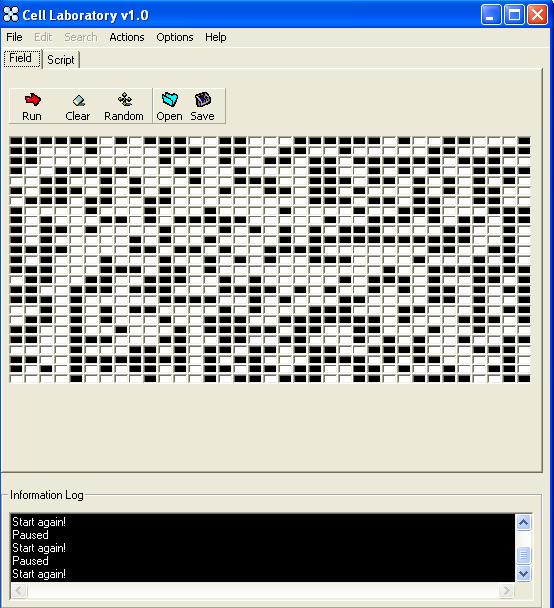

Cell Laboratory v1.0

- By Paras Chopra
General Description | Basic Controls | Scripting Language
General Description
This program is an experimentation toolkit for a 2D cellular automata. Cell Laboratory basically separates the rules and the field where action is happening. It offers customizable rule and field system. It means, a user is able to run the cellular automata using any of him custom rule. This program offers Save/Open functionality for both rules and field.
What is cellular automata?
Cellular automata is a field of AI. Cellular automata is implementation of
algorithm on a matrix of cells. This is 2D cellular automata because cells
are arranged in a columns and rows. There is a basic rule which determines
the state of a cell. By state I mean the condition of on or off of a cell.
In my implementation color black is on, while white is off.
What do you mean by 'rule'?
By rule, I mean: a basic condition applied to each and every cell to determine
its current state. The current state is influenced by the previous state of
itself and/or the previous state of its neighbors.
What do you mean by 'neighbours'?
In 2D, each cell is surrounded by 8 other cells. Take a look at any cell in
a spreadsheet application and count the number of cells surrounding that particular
cell. You'll find that it is 8.
Similarly, the number of neighbours in 1D is 2 and in 3D it is 26.
A graphical representation of cell's neighbours numbering from 1-8. This is the convention being used by the Cell Laboratory v1.0
1 | 2 | 3
4 | X | 5
6 | 7 | 8
Which is the default rule?
The default rule of the cellular automata by the rule called "Conway's
game of life". It is a very famous rule and the most startling
one. It is basically defined as following:
If curcell = 0 Then
If sumneb = 3 Then
change = True
End If
ElseIf curcell = 1 Then
If sumneb <> 2 Then
If sumneb <> 3 Then change = True
End If
Else
change = False
End If
The code means that if the current cell if OFF (0) and the 3 of its neighbours are ON then turn the current cell ON. And also, if the current cell is ON (1) and of 8 of its neighbours only total of 1,4,5,6,7 or 8 are ON then turn the current cell OFF.
This simple rule gives amazing results. Often self-replicating or self-sustaining structures can be seen evolved.
Basic Controls

A screenshot of Cell Laboratory v1.0
The controls are pretty self explanatory:
- 'Run' starts the simulation process
- 'Pause' pasuses the simulation proces
- 'Clear' turns all the cells to OFF state
- 'Random' fills the cells with random states. The screenshot above is the result of 'random' command.
- By clicking on Options you get a dialog wherein you may change rows and columns and the sleep value.
- Sleep value is the time interval in milliseconds between the updation of states in cellular automata
You may save or load the field or script. Field the total of all cells in a CA. If you save a field and the later load it: then you will get exactly same pattern of cells as on the time when you saved it.
Scripting Language
The scripting language being used in this program is VBScript. So It is being assumed that you know basic VBScript.